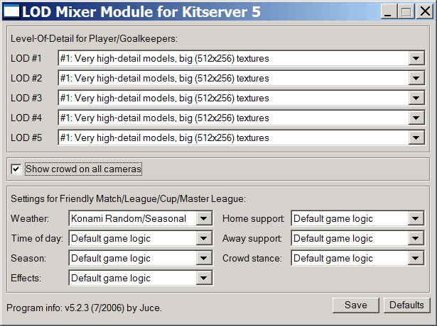

Руководство для KitServer 5.2
1.1. Введение
Kitserver 5.2 - это дополнительная программа для Pro Evolution Soccer 5, Winning Eleven 9 и Winning Eleven 9 Liveware Evolution, состоящая из нескольких отдельных независимых модулей. С данной версией поставляются пять модулей: Китсервер, LODmixer, Ballserver (сервер мячей), Faceserver (сервер лиц) и Stadium Server. Модуль Китсервер предоставляет альтернативный способ для управления формами вратарей и полевых игроков вне игрового AFS файла. PNG и BMP изображения форм организуются во внешнюю базу данных, которая представляет собой набор папок и файлов соответствующих нескольким простым правилам. Программа не ограничивает количество форм только домашней и выездной, вы можете иметь столько, сколько захотите. Модуль LODmixer позволяет контролировать отдельные аспекты графического движка - такие как: уровень детализации моделей игроков, присутствие зрителей на стадионах, погода в режимах League/Cup/Master League. Модуль Ballserver позволяет добавлять в игру дополнительные мячи. Модуль Faceserver - лица, ну а Stadium Server - стадионы.
1.2. Установка
Все как обычно: скопируйте полностью папку kitserver в игровую папку, так как показано на рисунке:

Войдите в папку kitserver и запустите setup.exe. "PES5.exe" в выпадающем списке будет выбран автоматически, поэтому просто нажмите кнопку "Install". Kitserver должен выдать сообщение о том, что инсталяция прошла успешно. (Если вы получили сообщение об ошибке, удостоверьтесь что игра в данный момент не запущена и PES5.exe не помечен только на чтение).
1.3. Деинсталляция
Войдите в папку kitserver и запустите setup.exe. "PES5.exe" в выпадающем списке будет выбран автоматически (выберите его, если это не так). Нажмите кнопку "Remove". Kitserver должен показать сообщение об успешной деинсталляции. Теперь, если вы хотите, вы можете удалить папку Kitserver полностью. (Также вы можете просто оставить ее на месте - она не причинит никакого вреда, и это даст вам возможность быстро переустановить Kitserver позже, если вы запустите setup.exe и нажмете кнопку "Install")
Китсервер (Kitserver Module) 5.2.3
2.1 Краткий обзор возможностей модуля
Отображение 2.5D форм на экране "Strip Selection".
(2.5D означает, что эти миниформы отображаются в 2-х измерениях, но созданы из настоящих текстур форм, используемых в игре).
Дополнительные формы полевых игроков.
Теперь возможно использовать не только 1-ю и 2-ю формы, но и 3-ю, 4-ю и т.д. Также можно комбинировать части форм, имеющих общую палитру (Более подробно про общие палитры ниже в документе). Дополнительные формы голкиперов будут поддерживаться в следующей версии.
Новая структура базы данных.
"KDB" переименована в "GDB" (Graphics DataBase) и теперь содержит не только формы, но также мячи и лица. Внутренняя структура полностью обновлена. Старая структура плохо подходила для использования дополнительных форм, новая же является достаточно гибкой. Когда вы привыкнете к ней, вы заметите, что она гораздо удобнее, чем KDB из Kitserver 5.0.
Поддержка 24-х и 32-х битовых изображений (High-Definition kits)
Существенна изменена внутренняя структура модуля и теперь проблема "общей палитры" больше
не существует. Вы можете свободно смешивать любые формы, а также использовать 256-цветные изображения с палитрой, 24-битные или 32-битные с альфа-каналом.
В данном документе, в качестве примера взята версия игры Pro Evolution Soccer 5, однако
вся информация также применима и к Winning Eleven 9 и к Winning Eleven 9 Liveware Evolution.
Просто не забывайте, что названия файлов могут немного различаться. Например, исполняемый
файл в PES5 называется PES5.exe, в WE9 - we9.exe, а в WE9:LE - WE9LEK.exe.
2.2. Организация графической базы данных (GDB)
GDB является наибольшим изменением в работе Kitserver по сравнению с версией 5.0. GDB содержит папку uni, которая отвечает за хранение форм команд (униформ). Важнейший файл в папке uni называется map.txt. Этот файл содержит информацию, где Kitserver должен искать формы для отдельной команды. Как вы знаете, каждая команда имеет свой собственный уникальный id - целое число от 0 до 201 (+несколько дополнительных команд "всех звезд"). Поэтому для каждой команды в GDB вы должны назначить, где формы для этой команды, в файле map.txt. Вот пример:
# This config maps team number into folder name
# Format: <team-num>,"<folder name>"
# Example: 21,"Russia"
8,"National\France"
9,"National\Germany"
65,"EPL\Aston_Villa"
75,"EPL\Man Utd"
77,"EPL\Newcastle"
80,"EPL\Tottenham"
170,"La Liga\Real Madrid"
ВАЖНО: Двойные кавычки обязательны для того, чтобы в названиях папок не было неопределенности.
Список всех номеров команд здесь:
uni.txt file
Обратите внимание, что образец GDB (предоставляемый с Kitserver) - просто один из возможных способов организации команд и папок. Папка "EPL" используется для всех английских команд, "National" - для всех сборных, и т.д. Возможно вам более подойдет просто список папок без группировки. В этом случае просто соответственно измените map.txt и создайте удобную вам структуру папок. Гибкость организации форм - основное достоинство использования map.txt.
Из map.txt вы можете видеть, что для того, чтобы найти форму для команды #8, Kitserver должен пойти в папку GDB\uni\National\France. Эта папка будет содержать все доступные формы для команды #8. Внутри, вы должны создать отдельную папку для каждой формы. Как здесь:
 Для полевых игроков папка с 1-ой формой должна называться pa, со 2-ой - pb. Дополнительные формы должны быть в папках с названиями, начинающимися с буквы "p". Для того чтобы формы были отсортированы по алфафиту, удобно использовать для дополнительных форм префикс "px-". Например, px-blue. Для вратарей, 1-я форма должна быть в папке ga, 2-я - в gb. Папки для дополнительных форм вратарей (что пока не поддерживается) могут иметь названия, начинающиеся с "g".
Для полевых игроков папка с 1-ой формой должна называться pa, со 2-ой - pb. Дополнительные формы должны быть в папках с названиями, начинающимися с буквы "p". Для того чтобы формы были отсортированы по алфафиту, удобно использовать для дополнительных форм префикс "px-". Например, px-blue. Для вратарей, 1-я форма должна быть в папке ga, 2-я - в gb. Папки для дополнительных форм вратарей (что пока не поддерживается) могут иметь названия, начинающиеся с "g".
ВАЖНО: Имя папки действует, как своеобразный идентификатор для Kitserver, что налагает дополнительные ограничения на имена папок: они не могут содержать пробелы, желательно должны быть относительно короткими, и на английском, французском или других языках использовующих латиницу - Latin1 (iso8859-1). Чтобы быть уверенным, что Kitserver правильно найдет папку, используйте латинские буквы, цифры, знак подчеркивания, и тире (знак минус).
Теперь давайте перейдем к содержимому папки с формой. Возьмем pa, как пример.
 Вот как будет выглядеть папка, если в ней, так называемая форма "все в одной" ("all-in-one"), это означает, что она не разделена на отдельные части: футболку, шорты и гетры. Kitserver может успешно работать как с раздельными, так и с формами all-in-one, т.к. он автоматически "делит" цельную форму на части прямо перед началом матча.
Вот как будет выглядеть папка, если в ней, так называемая форма "все в одной" ("all-in-one"), это означает, что она не разделена на отдельные части: футболку, шорты и гетры. Kitserver может успешно работать как с раздельными, так и с формами all-in-one, т.к. он автоматически "делит" цельную форму на части прямо перед началом матча.
Чтобы китсервер мог правильно разделить "all-in-one" формы во время игры, ему необходима папка masks, находящаяся
внутри uni. Не удаляйте эту папку.
Единственный случай, когда действительно нужна раздельная форма, это когда правила раздела формы на части нестандартны: как у вратарской формы Ювентуса с двумя разноцветными гетрами. Также вы можете использовать отдельные части, если у вас нет всех. Например, в папке px-away2 Ньюкасла (Newcastle) нет all.png, а вместо этого есть shorts.png и socks.png. Примечательно, что там нет shirt.png: Kitserver будет использовать только шорты и гетры и возьмет футболку из другой папки.
Подводя итог:
Использование all.png равнозначно использованию shirt.png, shorts.png, and socks.png. (В общем, избегайте ситуации, когда в папке находятся все четыре из них, или all.png и, скажем, shirt.png - это быстро приведет к путанице).
Изображения могут быть как в PNG так и в BMP формате. Соответственно имена файлов должны иметь расширение ".png" или ".bmp". Нет ничего страшного в смешении форматов для одной формы, например, может быть такая комбинация файлов shirt.bmp, shorts.png, socks.bmp.
| Зарезервированное имя PNG-файла | Зарезервированное имя BMP-файла | Предназначение |
|---|
| all.png | all.bmp | форма "all-in-one" |
| shirt.png | shirt.bmp | футболка |
| shorts.png | shorts.bmp | трусы |
| socks.png | socks.bmp | гетры |
| font.png | font.bmp | 256x64 текстура со шрифтом, для изображения имени игрока на спине |
2.3. config.txt
Это файл конфигурации атрибутов (в прошлых Kitserver-ах он назывался "attrib.cfg"). Как и прежде, это просто текстовый файл - вы можете использовать Блокнот (Notepad) или любой другой текстовый редактор для его просмотра и изменения. Каждая папка с футболкой (либо как с частью формы all-in-one, либо как с отдельным изображением) должна содержать свой config.txt внутри. Большая часть поддерживаемый аттрибутов относится к футболке, единственным исключением является - shorts.number.location. Поэтому, даже если у в папке находится только одно изображение с шортами, вам все равно понадобится config.txt - чтобы указать где на шортах должен быть расположен номер (слева, справа, на обеих сторонах, или должен вообще отсутствовать)
Вот таблица со всеми поддерживаемыми атрибутами:
|
Название атрибута | Значение | Формат | Пример |
|---|
| model |
идентификатор для 3D модели футболки |
целое число (в десятичной системе счисления) |
model = 37 |
| collar |
присуствие воротника |
yes/no |
collar = no |
| numbers |
имя файла (с путем относительно папки с формой) содержащего текстуру номеров: изображение 256x128 4bit/8bit с палитрой |
строка в двойных кавычках |
numbers = "..\num-white.png" |
| shorts.num-pal.X |
имя файла (с путем относительно папки с формой) содержащего палитру номеров: изображение с 4bit/8bit палитрой. Это палитра, которая будет использована для шорт из папки с формой "X", если эти шорты используются с данной футболкой. |
строка в двойных кавычках |
shorts.num-pal.pb = "..\pal-black.png" |
| shorts.number.location |
Позиция номера на трусах (Его можно отключить вообще: используйте значение "off").
|
left|right|both|off |
shorts.number.location = left |
| name.location |
Позиция фамилии игрока на спине. Этот атрибут полезен для тех команд, у которых
имена игроков на формы расположены в нижней части футболки. Как, например, у Boca Juniors.
(Опять же используя значение "off", можно вообще убрать фамилию со спины.) |
top|bottom|off |
name.location = top |
| logo.location |
Позиция эмблемы спонсора на спине. (Этот атрибут вряд ли будет полезен, так как
обычно эмблема спонсора является частью самой текстуры футболки.) |
top|bottom|off |
logo.location = off |
| name.shape |
Индикатор того должно ли имя игрока на спине написано прямо, или слегка по кругу: Значения
соответствуют допустимым значиям из Edit Mode: type1 - прямая, type2 - небольшое искривление,
type3 - более заметное искривление. |
type1|type2|type3 |
name.shape = type1 |
| radar.color |
Назначает цвет для радара. Пока что это аттрибут не всегда работает верно, но если интересно, попробуйте его использовать. (Устанавливая этот аттрибут, вы также меняете главный цвет для оригинальной мини-формы от Конами, а это влияет на то как игра выбирает формы по-умолчанию. В следующих версия китсервера, надеюсь что стабильность работы этого аттрибута будет налажена. |
цвет, в формате RRGGBB (red,green,blue) |
radar.color = 0A5D88 |
| description |
С помошью этого атрибута можно назначить произвольный пояснительный текст,
который будет использован во время выбора форм. См. также ниже:
kit information |
строка в двойных кавычках |
description = "Home (UEFA Champions League)" |
| mask |
Назначает файл маски, которая будет использоваться при "разрезании"
формы во время смешения частей. Данный атрибут нужен только в ситуации
когда раскройка происходит нестандартным образом. (См. секцию
На заметку китмейкерам для более подробного
описания.) |
строка в двойных кавычках |
mask = "mask_juve.png" |
Для лучшего понимания использования shorts.num-pal.X изучите образцы config.txt файлов из GDB. Сначала это может выглядеть слишком запутано, однако, через некоторое время станет ясно, почему понадобился именно такой способ организации. (Главное, это подавить в себе фразу "ну... как тут все запущено...") Для того, чтобы иметь возможность свободно смешивать части форм, должна быть возможность указать, какие номера и с какой палитрой будут использованы на шортах во множенстве различных ситуаций.
Например, рассмотрим config.txt из папки Germany pa:
model = 37
collar = no
numbers = "..\..\adidas_black.png"
shorts.number.location = left
shorts.num-pal.pa = "..\..\adidas_white.png"
shorts.num-pal.pb = "..\..\adidas_black.png"
Что означает:
Для футболки использовать номера Adidas (черные). Когда эта футболка используется с шортами из "pa", будет применен файл с палитрой "adidas_white.png", который воспроизведет белые номера на шортах. Когда эта же футболка используется с шортами "pb", будет применяться палитра из "adidas_black.png" и на шортах будут нарисованы черные номера.
2.4. Экран выбора форм и 2.5D-формы.
Для отображения форм из GDB (включая дополнительные) во время предматчевого выбора (Strip Selection), так называемые "2.5D" формы рисуются поверх миниформ от KONAMI. Название "2.5D" пошло от того, что формы двухмерные (т.е 2D), но они используют реальные текстуры, которые используются во время матча. Вот скриншот:
 (Когда у команды нет формы в GDB, будет использована оригинальная миниформа KONAMI).
(Когда у команды нет формы в GDB, будет использована оригинальная миниформа KONAMI).
Вы можете переключаться между 1-ой и 2-ой формами, как и прежде, используя клавиатуру и геймпад, в зависимости от ваших установок. Для того чтобы получить доступ к дополнительным формам, нажмите кнопку "O" - вы войдете в режим "Change Setup". Маленькие желтые стрелки теперь будут изменять отдельные части формы, это позволит использовать дополнительные формы и их части. Все это входит в функциональные возможности игры, поэтому вам не понадобится нажимать какие-либо специальные клавиши для этого.
Новой возможностью Kitserver является то, что выбирая другую футболку (шорты или гетры), теперь вы сможете поменять по кругу все доступные варианты, а не только части 1-ой и 2-ой форм.
Кроме форм полевых игроков, вы также можете менять формы вратарей. Экран выбора форм теперь работает в двуж режимах: "Игроки" и "Вратари". Переключаться между режимами можно с помощью клавиши [Tab]. Также как и для игроков, для вратарей вы можете смешивать различные формы - если войдете в режим "Change Setup".

Внизу, под формами, отображается различная дополнительная информация. Разные модули
используют это пространство по-разному, поэтому в каждый определенный момент, видна только
информация относящаяся к какому-то одному из модулей. Переключаться между разными
информационными блоками можно клавишами [PAGE UP] и [PAGE DOWN].
На данном примере показан блок "Kit information", который отображает текст "description"
атрибутов.

НА ЗАМЕТКУ: Ранние версии (5.1.0, 5.1.1) китсервера некорректно работали с некоторыми графическими картами.
В частности, проблемы были обнаружены с GeForce FX и GeForce 4 картами: мерцание экрана, сильное замедление работы при входе
в режим выбора форм, вместо 2.5d-форм отображались куски случайных текстур. Начиная с версии 5.1.2, это ошибка была исправлена. (Если все
же у вас она по-прежнему присутствует, попробуйте установить новый драйвера видеокарты от Nvidia).
2.5 На заметку китмейкерам
Так-называемые High Definition Kits - основное новшество данной версии модуля. Можно смело
экспериментировать с различными размерами текстур и "глубиной" изображения (количеством цветов).
К примеру, можно использовать текстуры 1024x512 или 2048x1028 - важно чтобы было сохранено
соотношение 2:1. 256-цветные текстуры с альфа каналом или без по-прежнему поддерживаются, но
кроме них теперь можно также использовать 32-битные изображения и 24-битные. В случае последних (24-битовых) Китсервер попытается загрузить альфа-канал из отдельного файла ("all-alpha.png" или "shirt-alpha.png" или соответствующих bmp-файлов). Если такой файл найден, порядковый номер цвета в палитре будет использован в качестве значения альфы в том же месте в текстуре. Пример такого файла с палитрой: alpha.pal (при его использовании, черный цвет с индексом 0 будет означать полную прозрачность,
а белый цвет с индексом 255 - полную непрозрачность). Если подобный файл палитры не найден - все пикселы будут интерпретированы как полностью непрозрачные.
На данной момент, только 256-цветные изображения могут служить в качестве alpha-файлов, но помните, что цвет как таковой не важен, а важен только его индекс в палитре. Все это вышесказанное про альфа-файлы, относится только к 24-битовым текстурам.

Несколько слов по-поводу "раскройки" форм на отдельные части. Как и раньше, это выполняется с
помощью файлов-масок, но формат масок изменен. Теперь все три части объединены в одну маску и
обозначены разными цветами: красным (футболка), синим (шорты) и желтым (гетры). По-умолчанию,
используется файл uni\masks\mask.png. Однако Ювентус использует другое разбиение, и поэтому
Вам понадобится прописать атрибут "mask" для этих футболок.
Несмотря на все эти изменения, необходимо отметить что по-прежнему можно использовать
существующие 256-цветные текстуры, которые китсервер сам динамически конвертирует в 32-битные,
а также можно смешиваеть различные формы - вне зависимости от палитры и формата изображения.
Важно не удалить папку "masks", так как без нее раскройка работать не будет.
Ballserver Module 5.2.3
3.1 Краткий обзор возможностей модуля
Выбор мяча на экране "Strip Selection".
Пока просто текст названия мяча, но возможно в будующем появится "preview".
Поддержка текстур разного размера.
Можно использовать текстуры 256x256, 512x512 и даже 1024x1024 пикселов, в форматах PNG или BMP.
3.2 Конфигурация GDB
Ballserver использует ту же самую папку GDB, что и остальные модули. Внутри папки GDB, теперь есть новая папка balls. Внутри нее, вы увидите файл со знакомым названием map.txt (похож на тот, что используется киствервером, но этот - для мячей). Формат очень прост: три аттрибута для каждого мяча. Первый - это имя, которое будет отображено во время выбора форм. Второй - имя файла модели мяча. Третий - имя текстуры мяча. Пример:
# This is the configuration file for Ballserver
# Format: "<name displayed in game>","<model file>","<texture file>"
# Example: "adidas Finale Capitano Grey","ariel_mdl.bin","adidas_finale_capitano_grey.bmp"
# Texture paths are relative to GDB\balls\, model paths to GDB\balls\mdl\
# adidas
"adidas Finale Capitano Grey","ariel_mdl.bin","adidas_finale_capitano_grey.bmp"
"adidas Teamgeist Blue","gwidon_mdl.bin","adidas_teamgeist_blue.png"
# Nike
# Puma
# This comment makes sure you have pressed the enter key after the last ball
Не забудьте двойные кавычки! (Иначе аттрибуты будут неверно прочитаны). Конфигурация, приведенная выше, позволяет выбрать между двумя новами мячами: adidas Finale Capitano Grey и adidas Teamgeist Blue. Текстуры должны находиться в папке "GDB\balls", а модели - в "GDB\balls\mdl".
Вы можете также организовать мячи в отдельные папки. В этом случае необходимо использовать относительные пути в именах файлов. Например, mysubfolder\tex.png
для файла "tex.png" в папке "GDB\balls\mysubfolder".
Скачивая разные мячи со многих сайтов, вы заметите, что большое количество мячей используют одну и ту же модель, а различаются только текстурами. В этои случае, вы можете использовать один и тот же файл модели для всех этих мячей. Модель не зависит от размера текстуры, и вы можете использовать текстуры разных размеров (256x256, 512x512, 1024x1024) с одной и той же моделью.
3.3 Выбор мяча
Во время выбора форм (Strip Selection) вы увидите текст, расположенный немного ниже самих форм: "Ball: game choice". Это означает, что в матче будет использован мяч "по-умолчанию". Нажимая клавишу B на клавиатуре, вы можете выбрать следующий по порядку мяч из GDB. (или перебирать мячи в обратном порядке, с помощью клавиши V). Название мяча на экране должно измениться следующим образом: "Ball: <имя мяча из map.txt>" и тогда в матче вы должны увидеть этот мяч. Клавиша R выбирает мяч из списка случайным образом, а клавиша C - снова возвращает к "game choice".

Если текст и мяч не отображены на экране, возможно Вам нужно переключить информационный блок
с помошью клавиш [PAGE UP] и [PAGE DOWN], чтобы желтый текст внизу экрана
гласил "Ball selection"

FaceServer Module 5.2.3 (fserv.dll)
4.1 Введение
Фэйссервер (Faceserver) позволяет организовать файлы лиц и причесок в GDB, и
назначать их индивидуально каждому игроку. Бета-версия фэйссервера имела некоторые
проблемы с анимиционными вставками (например, замена игрока во время матча), а
также в Edit Mode. В данной версии модуля эти недочеты устранены. В настоящее
время пока нерешенной остается проблема повторов: идентификаторы игроков
не сохраняются вместе с повторами, и поэтому фэйссервер не в состояние правильно
подменить лица и прически во время их просмотра (в режиме Museum). Но мы
работаем над новым модулем, который должен устранить и этот недостаток.
4.2 Как использовать
В результате последних изменений, теперь можно просматривать то как выглядят лица
в режиме Edit Mode, и в верхней части экрана можно видеть следующую информацию об
игроке: его идентификатор, файл лица, файл прически.

Пример лица Давида Виллы изготовил Chris79. Идентификатор игрока также можно отыскать
в файле PlayerList.txt, и это есть тот самый идентификатор, который нужно использовать
при конфигурации игрока в map.txt. Скопируйте BIN лица в папку GDB\faces.
В map.txt, добавьте новую строку - аналогично той, которая приведена в качестве примера в комментариях в заголовке файла (идентификатор игрока, запятая, файл лица в двойных кавычках). Имя файла
берется относительно папки GDB\faces, так что вы можете использовать свои дополнительные
папки внутри нее, чтобы организовать игроков по командам, или еще как-нибудь по своему
усмотрению. Конфигурация прически - аналогична, с той разницой, что нужно использовать
папку GDB\hair.
Во время матчей, лицо и прическа и игрока будут соответственно подменены. Не обращайте
внимание на то, что при редактирование игрока (в Edit Mode) его лицо и прическа сбрасываются
на стандартные - это просто показывает то, что изменения не сохраняются в options file.
Тем не менее, во время матча, лицо и прическа будут отображаться корректно.
У многих пользователей были пробемы с нахождением файла PlayerList.txt. В принципе
он больше не нужен (так как идентификатор игрока можно определить в Edit Mode. См. выше).
Но в качестве справочной информации, этот файл может быть полезен. Китсервер создаст
PlayerList.txt после первого запуска игры с включенным фэйссервером. В данной версии
в этот файл добавлена новая информация, поэтому Вам необходимо удалить старый
PlayerList.txt, иначе он не будет обновлен.
Вы вероятно достаточно быстро обнаружите, что новые лица (вставленные фэйссервером) можно
выбирать в Edit Mode - они добавлены после существующих из AFS. Есть две причины, почему
этого делать не следует. Во-первых, подобное изменение будет сохранено в options
file, и это впоследствие может привести к проблемам если вы отключите фэйссервер или
вставите новые лица. Во вторых, номер лица, сохраняющегося в options file ограничено
числом 512. Если Вы будете конфигурировать лица (тоже самое относится и к прическам) с
помощью map.txt, то вышеуказанных траблов на возникнет.
Большинство вылетов (a.k.a. "crashes") происходит от неверной конфигурации map-файлов и
в случае дефектных BIN-файлов с лицами и прическами. В случае проблем, проверяйте эти
две вещи в первую очередь, ну а потом уже можно и на форумах ругаться :)
Stadium Server 5.2.3
5.1 Введение
Stadium Server - подключаемый модуль для Kitserver. Он позволяет
использовать дополнительные стадионы, содержащиеся в GDB и
организованные так же, как формы, мячи и лица.
5.2 Организация GDB
Эта секция в основном для создателей стадионов, чтобы
они могли организовать свои стадионы так, как необходимо для stadium
server. Для пользователей установка стадиона в этом случае будет очень
легкой - простое копирование папки.
Чтобы добавить новые стадионы в игру, вы должны организовать их особым способом в GDB.
В GDB теперь есть новая папка stadiums, которая содержит все дополнительные стадионы:

Внутри папки stadiums каждый стадион нахоится в своей папке.
Например, Вы можете видеть здесь 4 стадиона (файл map.txt будет рассмотрен позже):

ВАЖНО: Имя папки будет использовано Stadium
Server будет использовано, как имя стадиона и в матчах, и в режиме
"View Stadiums".
Внутри каждой папки стадиона структура директорий всегда одинакова.
Каждый стадион состоит из 68 файлов: 66 файлов для самого стадиона + 1
с текстурами рекламных щитов BIN + 1 файл с информацией (info.txt - год
строительства и вместимость стадиона содержатся здесь). 66 файлов
стадиона разделены на 6 папок - каждая используется для следующего
сценария: fine day, rainy day,
snowy day, fine night, rainy night, snowy night (ясный день, дождь,
снег, ясная ночь, дождь ночью, снег ночью). Папки называются:
1_day_fine, 2_day_rain, 3_day_snow, 4_night_fine, 5_night_rain,
и 6_night_snow. Текстуры щитов BIN хранятся папке под названием adboards_tex.

info.txt имеет очень простую структуру. Вы указыаете дату строительства и вместимость, а также город, как в примере ниже:
# Stadium info file
built = 1999
capacity = 16500
city = Ramenskoye
Внутри каждой из 6 папок стадиона файлы имеют одинаковые
фиксированные имена, указывающие какую часть стадиона они содержат.
(Важно назвать файлы в каждой из 6 папок ТОЧНО, как показано на
картинке, потому что иначе stadium server не сможет загрузить стадион
правильно).
Например, вот содержимое папки 1_day_fine:

Несколько замечаний Gwidon про содержимое каждого из файлов:
| File | Comments |
| crowd_a0.str |
Гостевые болельщики и флаги, при отсутствии гостевой поддержки (0-зв.) |
| crowd_a1.str |
Гостевые болельщики и флаги, при слабой гостевой поддержке (1-зв.) |
| crowd_a2.str |
Гостевые болельщики и флаги, при хорошей гостевой поддержке (2-зв.) |
| crowd_a3.str |
Гостевые болельщики и флаги, при максимальной гостевой поддержке (3-зв.) |
| crowd_h0.str |
Домашние болельщики и флаги, при отсутствии домашней поддержки (0-зв.) |
| crowd_h1.str |
Домашние болельщики и флаги, при слабой домашней поддержке (1-зв.) |
| crowd_h2.str |
Домашние болельщики и флаги, при хорошей домашней поддержке (2-зв.) |
| crowd_h3.str |
Домашние болельщики и флаги, при максимальной домашней поддержке (3-зв.) |
| stad1_main.bin |
Основной файл стадиона, с текстурами и моделями |
| stad2_entrance.bin |
Начальная сцена |
| stad2_adboards.bin |
Структура щитов |
В Папке adboards_tex.bin теперь всего один файл - default.bin,
в котором содержаться все текстуры, используемые для рекламных щитов во
время матча. (В будущем, эта папка сможет содержать и другие BIN с
текстурами, т.е. мы сможем использовать разные щиты в разных типах
матчей... Пока эта возможность не реализована.)

5.3 Stadium Importer
В качестве вспомогательной утилиты для организации стадионов, поставляется
stadimp.exe. Она упрощает процесс импорта стадиона в базу GDB.
В принципе можно разобраться и вручную, однако утилита несколько ускоряет
монотонный процесс. Положите 66 файлов стадиона в папку kitserver\stadimp\stadium,
после чего добавьте туда также файл с рекламными щитами (его необходимо
назвать adboards.bin. Программа задаст несколько
наводящих вопросов о том как называется стадион, год создания, вместимость, и т.п.
и сама создаст файл "info.txt". После всего этого можно смело удалять папку
stadimp.
5.4 map.txt
map.txt в Stadium Server используется немного по другому в
сравнении с другими модулями (Kitserver или Ballserver, и т.д.). Чтобы
использовать стадион из GDB, совсем не обязателен файл map.txt. Однако,
он позволяет задать "home stadium" (домашний стадион) для команды.
Тогда, если Stadium Server в режиме "home team" (Вы можете переключать
его, нажимая клавишу [7]),
он сможет определить, какая команда играет дома, и попытаться загрузить
нужный стадион из GDB. Вот простой map.txt, с двумя командами, имеющими
домашние стадионы:
# Stadium Server map file
# --------------------------------------------------------------
# This config maps team number into its home stadium folder name
# Format: ,""
# Example: 170,"Santiago Bernabeu"
170,"Santiago Bernabeu"
184,"Saturn Ramenskoye"
ВАЖНО: Двойные кавычки обязательны, чтобы не
возникало неопределенности в имени папки. Чтобы узнать ID каждой из
команд, смотрите файл
uni.txt
5.5. Режимы работы
На экране Strip Selection Вы сможете увидеть текст, указывающий
выбранный стадион (или режим), при этом будут доступны 4 новые горячие
клавиши [7],[8],[9],[0]:

Маленькое изображение (preview) стадиона загружается из файла preview.png (или preview.bmp), если таковой имеется в папке стадиона.
У Stadium Server есть 2 режима работы при загрузке стадионов из GDB:
"selected stadium" (выбранный стадион) и "home team stadium" (домашний
стадион). Используя клавиши [9] и [0], Вы можете передвигаться вперед и назад по доступным стадионам из GDB. [8] выберет случайный стадион из GDB. Нажимая [7], вы переключаетесь между "game choice" (выбор по обычной логике игры) and "home
team stadium mode" (режим домашнего стадиона). Если выбран "game choice", используются стадионы из AFS.

5.6. "View Stadiums"
Вы можете просмотреть все стадионы из GDB в режиме игры "View Stadiums". Для этого зайдите
в Options/Museum/View Stadiums и нажите клавишу [1]. Чтобы переключиться обратно
на стандартные стадионы, снова нажимайте [1]. Кроме того, можно выбирать
произвольную погоду с помощью клавиши [2] - это работает как для стадионов из
базы GDB, так и стандартных стадионов (из AFS).

LOD Mixer Module 5.2.3
6.1 Краткая справка
Китсервер теперь включает в себя новый модуль - LOD Mixer. Этот модуль позволяет произвести
некоторые изменения в конфигурации графического движка игры. Например, включить зрителей на
всех камерах, изменить таблицу уровней детализации (LOD), менять погоду/стадион и др. в
режимах League/Cup/Master League.
Для конфигурации модуля запустите lodcfg.exe. Скриншот того, как это выгдядит
(практически идентично более старой версии LOD Mixer - 1.6, которая распространяется в
качестве самостоятельной утилиты):

Более подробно про LOD Mixer можно прочитать здесь:
lodmixer.txt
(К сожалению, пока только на английском)
Начиная с версии 5.2.3, вы можете управлять некоторыми настройками LOD-миксера
прямо в игре, если выберете соответствующую страницу (информационный блок) во время
экрана с выбором форм (как это сделать, объяснено здесь):

Клавиши навигации следующие: [1] и [2] - выбор настройки (текущая
подсвечена желтым). [+] и [-] на числовой клавиатуре - смена значения
текущей настройки. Конфигурация сохраняется автоматически.
Некоторые аспекты конфигурации
7.1. Главный конфигурационный файл: kload.cfg
В большинстве случаев, Вам не понадобится модифицировать этот файл. Однако, если вы
хотите отключить какой-нибуль модуль, то это делается именно в этом файле - kload.cfg. Вот как он выглядит по-умолчанию:
# Loader configuration file
gdb.dir = ".\"
DLL.num = 8
DLL.0 = "kitserver\zlib1.dll"
DLL.1 = "kitserver\libpng13.dll"
DLL.2 = "kitserver\kserv.dll"
DLL.3 = "kitserver\bserv.dll"
DLL.4 = "kitserver\fserv.dll"
DLL.5 = "kitserver\lodmixer.dll"
DLL.6 = "kitserver\stadium.dll"
DLL.7 = "kitserver\dxtools.dll"
# DirectX options
dx.force-SW-TnL = 0
dx.emulate-HW-TnL = 0
#dx.fullscreen.width = 1920
#dx.fullscreen.height = 1200
Первые два модуля - это стандартные библиотеки для поддержки изображений в формате PNG. Не
удаляйте эти модули. Последующие четыре модуля - это собственно сами модули китсервера, которые не зависят друг от друга и могут быть отключены и снова включены. Например, чтобы отключить модуль лиц (kserv.dll) - добавьте символ "#" в начало соответствующей строки:
DLL.num = 8
DLL.0 = "kitserver\zlib1.dll"
DLL.1 = "kitserver\libpng13.dll"
#DLL.2 = "kitserver\kserv.dll"
DLL.3 = "kitserver\bserv.dll"
DLL.4 = "kitserver\fserv.dll"
DLL.5 = "kitserver\lodmixer.dll"
DLL.6 = "kitserver\stadium.dll"
DLL.7 = "kitserver\dxtools.dll"
Опции dx.force-SW-TnL и dx.emulate-HW-TnL позволяют добиться того же эффекта, что и аналогичные установки в утилите 3DAnalyzer: "Force SW TnL" и "Emulate HW TnL Caps". Если у вас проблемы со стабильностью игры, но по какой-то причине вы не можете использовать 3DAnalyzer, попробуйте активировать эти установки.
Чтобы включить эти опции, замените значение 0 на 1.
Две последнии опции - dx.fullscreen.width и dx.fullscreen.height - можно использовать чтобы "навязать" свое разрешение монитора в полноэкранном режиме. Обратите внимание, что по-умолчанию, эти опции отключены (так как перед ними стоит знак комментария - '#'). Чтобы включить их, удалите знак комментария в обеих строках.
Над данной версией программы работали:
Программирование: juce, Robbie
Тестирование: biker_jim_uk, ntalex, Gwidon, nt89
Организация GDB и идея "home team stadium": Gwidon
Информация о стадионах в AFS: nt89
Формы: Spark, kel, qiankun.
Мячи: DAMned.
Модели мячей: Ariel, Gwidon.
Лицо Давида Виллы: Chris79.
Стадион "Сатурн Раменское": Asiat
Стадион "Santiago Bernabeu": Gwidon
Формы и мячи взяты здесь: http://www.wevolution.org
Шрифты, номера: авторы неизвестны. Изображения взяты с этого сайта:
http://www.socsci.umn.edu/~jkoepp/pes5/
и из самой игры.
Документация:
русский текст: TriAn, juce
немецкий текст: Robbie
английский текст: juce, Robbie
итальянский текст: FabioS
Kitserver использует следующие открытые библиотеки (open source software):
pngdib by Jason Summers
http://entropymine.com/jason/pngdib/
libpng by Guy Eric Schalnat, Andreas Dilger, Glenn Randers-Pehrson, and others
http://libpng.org/pub/png/libpng.html
zlib by Jean-loup Gailly and Mark Adler, and others
http://www.zlib.net/